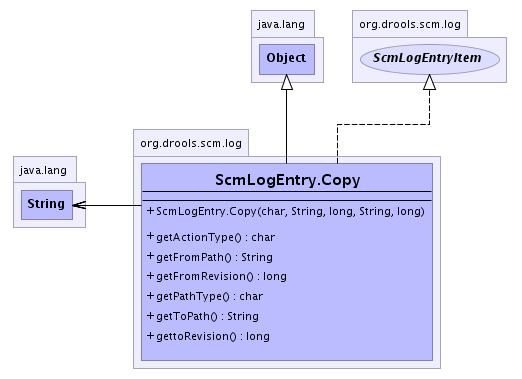

org.drools.scm.log
Class ScmLogEntry.Copy
java.lang.Object
 org.drools.scm.log.ScmLogEntry.Copy
org.drools.scm.log.ScmLogEntry.Copy
- All Implemented Interfaces:
- ScmLogEntryItem
- Enclosing class:
- ScmLogEntry
public static class ScmLogEntry.Copy
- extends java.lang.Object
- implements ScmLogEntryItem
-
- 
|
Constructor Summary |
ScmLogEntry.Copy(char type,
java.lang.String fromPath,
long fromRevision,
java.lang.String toPath,
long toRevision)
|
| Methods inherited from class java.lang.Object |
clone, equals, finalize, getClass, hashCode, notify, notifyAll, toString, wait, wait, wait |
ScmLogEntry.Copy
public ScmLogEntry.Copy(char type,
java.lang.String fromPath,
long fromRevision,
java.lang.String toPath,
long toRevision)
getFromPath
public java.lang.String getFromPath()
getFromRevision
public long getFromRevision()
getToPath
public java.lang.String getToPath()
gettoRevision
public long gettoRevision()
getPathType
public char getPathType()
- Specified by:
getPathType in interface ScmLogEntryItem
getActionType
public char getActionType()
- Specified by:
getActionType in interface ScmLogEntryItem